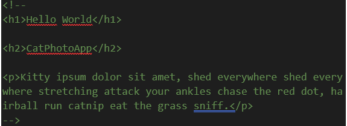

En nuestro código podemos realizar comentarios que ayudan a
organizar el trabajo que estamos realizando. Estos comentarios no se
visualizan en el viewport del navegador, es decir, solo se pueden
visualizar en el código donde estamos trabajando. A continuación, se
muestra una imagen con código comentado:

Como podemos observar, en código comentado se transforma a color
verde y el contenido dentro de sus etiquetas no pueden ser
visualizados en el navegador.
Etiquetas para títulos
Las etiquetas "h" se usan para escribir
encabezados o títulos, esta etiqueta se acompaña de un número
que va del 1 hasta el 6 (h1 a h6) para establecer jerarquías
entre los títulos siendo h1 el título principal.
Ejemplo:
Subtítulo "h2"
Subtítulo "h3"
Subtítulo "h4"
Etiqueta P
En las etiquetas p podemos dar
formato de párrafo en un modelo de caja en el cual vamos a
ingresar un texto en él. Esta etiqueta tiene un
cierre par "/p" y nos ayuda a separar entre las líneas los
párrafos que deseamos formar. Si, tenemos un texto en un contenedor
y no describimos la etiqueta "p" este texto se colocará en una misma
línea.
Formatos de Texto
También, es una buena herramienta para describir estilos específicos
dentro de los párrafos. Estos estilos los podemos dar con las
etiquetas "b" o "strong" que ambas tienen cierre par y por
ahí en algunos casos necesitemos la etiqueta "em" que tiene
cierre par. En el caso de que debemos tener un salto de línea en el
mismo párrafo podemos utilizar la etiqueta "br" (break).
Ejemplo de párrafo con formatos de texto
El paintball o gotcha
(en español "bola de pintura") es un juego de estrategia
complejo en el que los participantes usan pistolas de paintball para
disparar bolas de pintura contra los integrantes del otro equipo.
Los jugadores alcanzados por bolas de pintura son
eliminados del mismo a veces en forma transitoria y
a veces en forma definitiva, dependiendo de la modalidad.
Contrariamente a lo que se piensa, es uno de los deportes de aire
libre más seguros.
Las marcadoras, las cuales son accionadas por aire comprimido, CO2 u
otros gases, en un comienzo se vendían en los catálogos agrícolas y
también podían usarse para marcar árboles.
Formato de texto en línea
En algunas ocasiones debemos darle un formato de estilo a un texto
que esta en la misma línea, esto lo podemos lograr con propiedades
de CSS que agregaremos con palabras claves en nuestro texto. Para
dar una generalización de estilo podemos utilizar la etiqueta
"Font" y dentro de ella utilizar las propiedades con los
valores que deseemos para ilustrar nuestro contenido en línea. Font
es una etiqueta que tiene cierre par.
Propiedades de Font
Face (tipo de letra): Face="arial"
Size (Tamaño de letra): Size="22"
Color (Color de letras): Color:"blue"
Etiqueta "hr", separador de filas
Esta etiqueta no tiene contenido así que tiene un cierre en la misma
“hr”.Sirve para colocar una línea horizontal que ocupe todo el ancho
de la página. Podemos observar que sus iniciales son “horizontal rule”. A
continuación, visualizaremos un ejemplo:
Ejemplo:
Parte superior al separador
Parte inferior del separador
Etiquetas para formatos de texto adicionales
A continuación, hay un link donde nos lleva a una página donde
encontraremos diferentes formatos de texto para escribir en nuestro
HTML.